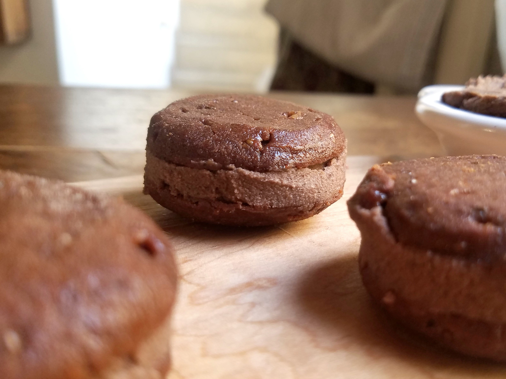

“Tapas de alfajores”
Receta y fotos de Natalia Kiako

Con o sin gluten. Para rellenar con chocoporotos
Ingredientes
- 2/3 de taza de azucar
- 2 cucharadas de almidon de maiz
- 1/3 de taza de aceite de coco liquido o manteca
- 1/4 de taza de leche vegetal o de vaca
- 1/4 cucharadita de bicarbonato d sodio
- 1/4 cucharadita de polvo de hornear
- 1/2 cucharadita de sal
- 1 taza y 1/2 de harina de arroz o de trigo o mitad y mitad
- 1 y 1/2 cucharadita de esencia de vainilla
Preparación
- Precalentar el horno a 180 grados. Aceita o enmantecar una placa, o colocar papel manteca.
- En un bowl grande, mezclar el azúcar y el almidón hasta integrarlos. Agregar el aceite de coco mezclando con batidor de alambre alrededor de un minuto: van a notar que la mezcla se espesa.
- Agregar la leche y la vainilla batiendo hasta incorporar bien. Dejar reposar un minuto o dos. Agregar los secos (harina/s, polvos y si usan cacao también) hasta obtener una masa densa y aceitosa. Si está demasiado chirle, agregar una o dos cucharadas extra de harina.
- Lo ideal en este punto es dejar reposar al menos quince minutos la masa en la heladera. Va a ayudarlos a manipular mejor la masa y va a quedar más rico. Pero si están apurados pueden avanzar directamente, colocando cucharadas en la placa con bastante espacio entre sí porque en el horno las galletitas van a crecer un poco. Otra forma de formar las galletitas es amasar con las manos húmedas pelotitas y luego aplastarlas suavemente con el dorso de la cuchara o con la mano, hasta obtener discos gruesos.
- También en esta instancia podrían refrigerar la masa un rato (o freezarla y tenerla lista para hornear otro día, si les conviene).
- Hornear unos diez a quince minutos, a 180 grados, hasta que las galletitas empiecen a dorarse en los bordes y se vean secas en el medio. Si refrigeraron la masa ya en la placa, es bueno poner el horno a 170 grados y cocinar unos minutos más, 15 a 20.
- Dejar enfriar un poco antes de despegarlas de la placa y conservar a temperatura ambiente en un tupper o frasco hermético por hasta 5 días.
Volver al indice